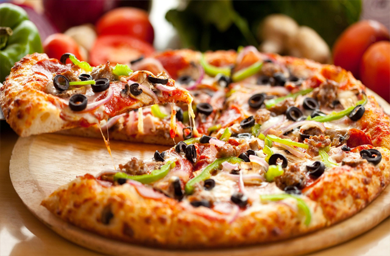

Hei og velkommen til websiden min. Jeg liker å sette opp websiden min på denne måten
Hei igjen. I denne websiden skal jeg vise litt av prosjektene vi har hatt frem til nå.
Regner med at siden skal bli oppdatert ettersom vi går gjennom flere prosjekter. Største problemet jeg hadde med websiden var dropdown menyen.
Etter at jeg fiksa drowdown menyen, hadde jeg litt problemer med marginene og paddingene.
Jeg har brukt en del tid på å sette sammen websiden, men med litt hjelp fra nettet og web3school gikk det til slutt greit :)
Favoritt Mat Nummer 1 Pizza

Pizza er en italiensk rett som består av en bunn, hovedsakelig laget av hvete, med ulikt fyll på, som for eksempel tomat, ost og/eller kjøtt.
Retten kommer opprinnelig fra Italia med tynn bunn, men er blitt videreutviklet i USA med tykkere bunn og mer fyll og har derfra spredd seg til
store deler av verden som en form for hurtigmat
Favoritt Mat Nummer 2 Taco
Taco er en tradisjonell meksikansk matrett som består av en rullet og foldet mais-tortilla fylt med krydret kjøtt og diverse grønnsaker.
Ifølge Real Academia Espanola betyr ordet taco en plugg (rullet papir brukt for å tette et hull)
Favoritt Mat Nummer 3 Kebab
Kebab, også skrevet og kalt kebap, kabob, kibob, 'bab, er en matrett som betyr grillet kjøtt.
Opprinnelsen til matretten er omdiskutert, men den mest kjente er at matretten oppsto under Salahadins krigstokter
spesielt da de som nomader var innblandet i stammekriger. Det var vanlig at krigerne spiddet kjøttstykkene på sverdet
og stekte dem over åpen ild. Opprinnelig ble det brukt fåre- eller lammekjøtt, i dag brukes også oksekjøtt